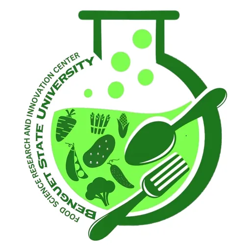

Food Science Research and Innovation Center — Benguet State University
Benguet State University · CAR
The Food Science Research and Innovation Center (FSRIC) at Benguet State University is the Cordillera Administrative Region's designated Food Innovation Center under the DOST network. Located at Km. 6, La Trinidad, Benguet — the heart of the Philippines' premier highland vegetable and strawberry production zone — the FSRIC was formally launched in April 2018.
- Category
- Food Innovation Center
- Host institution
- Benguet State University
- City
- La Trinidad, Benguet
- Region
- CAR
- Operating status
- Operating
About the Center
As both a DOST FIC and BSU's dedicated center for food science R&D, the FSRIC operates with a broader mandate than a typical food innovation facility. It conducts original research across five specialized divisions, provides extension and technology services to food processors and entrepreneurs in the Cordillera, and serves as a learning center for students in food science-related courses.
The FSRIC's highland setting gives it a distinctive focus on Cordillera agricultural commodities — including strawberries, highland vegetables, root crops, and indigenous products — with research aimed at value-added processing, nutritional enrichment, food safety, and developing shelf-stable products that can reach wider markets.
Vision: A catalyst in the development of vibrant food industries.
Mission: To lead in food science research and technology innovation for food and nutrition security and global competitiveness.
Goal: To increase productivity and incomes of food processors and entrepreneurs through the promotion of technologies.
Programs & Services
The FSRIC operates through five functional research and service divisions:
- Crop-based Food Technology R&D Division — nutritious and health-forward food and beverage products from crops, including edible films and value-addition analysis for Cordillera agricultural commodities
- Meat, Aquaculture and Seafood-based Food Technology R&D Division — product development and value-addition for animal meat, poultry, aquaculture, and seafood-based products
- Food Engineering R&D Division (FERD) — applied physical sciences combining microbiology and engineering for food and related industries
- Extension and Technology Innovation Division — technical assistance to local food processing industries on quality, safety, food regulations, and food business development
- Food Quality Analytical Lab and Food Safety Division — product characterization, sampling, and quality analysis
Additional services include technology training, consultancy for food entrepreneurs and processors, and linkage with BSU's adjacent Agri-Technology Business Incubator (ATBI) for product commercialization pathways.
Contact
Sources & references
- bsu.edu.ph/fsric
- car.dost.gov.ph/dost-car-supports-local-food-msmes-through-fic-services-liv…
- sunstar.com.ph/more-articles/food-science-research-and-innovation-center-fo…
Details are drawn from public records and the sources above, July 2026.
Startupreneur Innovation Hub · synced from the Notion catalog (July 2026) · status: published.